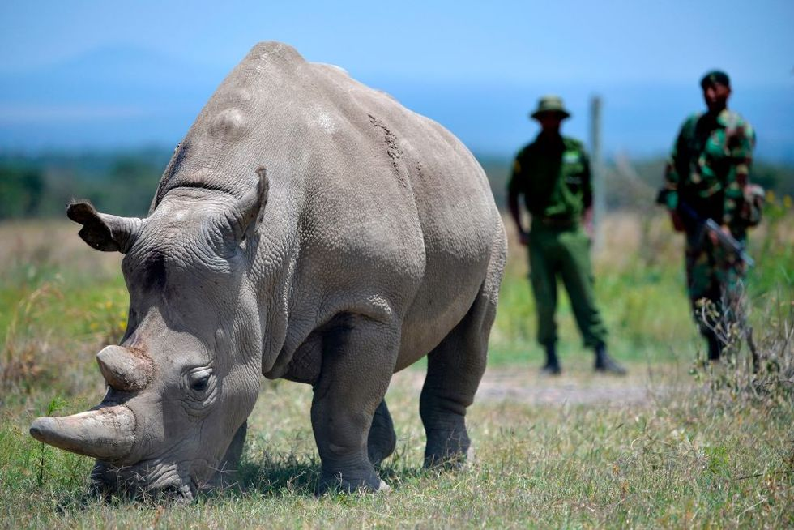

Extinct Animals Species
1. Smooth Handfish
Pictured is the red handfish, a close relative of the now-extinct smooth handfish, which existed in abundance in the waters around Australia just 200 years ago. Named after the uncanny resemblance to human arms and hands, the smooth handfish—which was declared extinct in 2020—also featured a very punk-rock mohawk-like spike on its head. Currently, there is only one known preserved specimen of the extinct smooth handfish in the entire world.
Say What? Scientists Goofed and Accidentally Created a New Kind of Fish
Cause of Extinction: Although a definitive cause of extinction is not known, scientists speculate that habitat loss and destructive fishing of other sea-life (like scallops) had a hand in their demise.
2. Yangtze River Dolphin
Also known as “baiji,” the Yangtze River dolphin was last seen in 2002. Four years later, a group of researchers traversed 2,000 miles along the Yangtze River to see if they could find one but to no avail. According to the Whale and Dolphin Conservation group (WDC), the baiji is the first dolphin species to become extinct due to humans.
Weirdly Militaristic Marine Mammals: Military Dolphins: Is North Korea Training Kamikaze Dolphins?
Cause of Extinction: Overfishing, pollution, loss of habitat, poaching, and boat traffic.
3. The Northern White Rhinoceros

The last two living northern white rhinos in existence happen to both be female as the last male died in March of 2018. Sudan, the 45-year-old male, was under armed guard at Kenya’s Ol Pejeta Conservancy when he passed away from old age and an infection.
You Heard it Here First: The Bioengineering Gambit to Save the Northern White Rhino
The two females are also unable to give birth, making the likelihood of introducing a new generation of the species highly unlikely. Scientists are working on using harvested sex cells and in-vitro fertilization to bring forth a lab-created northern white rhino.
Cause of Extinction: Poaching has decimated this population and loss of habitat also helped drive the rhino to the brink of extinction.
4.The Spix Macaw
Thought to be extinct in the wild, the Spix Macaw currently exists in captivity with their numbers in the dismally low 60 to 80 range. The bird is also referred to as “Little Blue Macaw” because they’re known for their vibrant blue feathers.
What Now? More Than Half of Coffee Species Are in Danger of Extinction
Cause of Extinction: The Spix Macaw went extinct in the wild due to habitat destruction, illegal trapping, and trade.
5. The Thylacine
The Thylacine, a carnivore also referred to as the Tasmanian tiger and Tasmanian wolf, was a (mostly) nocturnal marsupial that preyed on rodents and kangaroos.
Although Thylacines looked fierce, they were actually quite timid and, according to Live Science, “could be captured without a fight.” Reports of Thylacine sightings have been so frequent in the past century that it sparked an investigation as to the status of their existence.
Cause of Extinction: It is believed that Dingo populations threatened the Thylacine into extinction in addition to overhunting from humans.
6. The Passenger Pigeon
extinct animals, extinct animals we've lostPortland Press Herald//Getty Images
Estimates say that the passenger pigeon population numbered in the millions—and possibly billions—when the first Europeans began settling in America. MentalFloss reports that Wisconsin was home to the largest known nesting site in the late 1800s.
Tweet Tweet: Why the Humble Bird Nest Is an Engineering Marvel
Cause of Extinction: Humans hunted the pigeon and consumed it to the point of extinction with the last known bird dying in captivity in the Cincinnati Zoo in 1914.
7. The Quagga
The Quagga was native to South Africa and went extinct in the late 19th century. For a long time, the quagga was thought to be its own species before it was discovered that it was closely related to the Plains Zebra and was, in fact, a subspecies of the zebra. Quaggas quite literally looked like a mashup between two animals—a zebra in the front thanks to set of characteristic stripes, and a horse in the rear.
Wow! You Can Now Smell a Flower That Went Extinct a Century Ago
Scientists are trying to resurrect the quagga and have seen some success via reverse engineering by selectively breeding zebras (who carry quagga genes).
Cause of Extinction: Humans hunted the quagga to extinction.
8. The Pyrenean Ibex
The Pyrenean Ibex officially went extinct in 2000, before being “resurrected” nearly a decade later in 2009. Scientists used DNA taken from preserved epidermal samples to create a clone of a female Pyrenean Ibex, which was able to make it through gestation and even birth before dying shortly after of lung deformities.
Must Read: Tracking Endangered Species by Sound
Cause of Extinction: Extensive hunting during the 19th century.
9. The Golden Toad
The golden toad is not the only species to disappear in the past 40 years, but it just might be the brightest.
The small toad was last seen in 1989 in a Costa Rican rainforest before being declared extinct in 1994. It is believed that Chytridiomycosis, a fatal skin disease, decimated this toad population that was already vulnerable thanks to what Science is calling a “limited habitat and small population.”
Cause of Extinction: Pollution, global warming, and chytrid skin infections led to the extinction of this species.
10. Zanzibar Leopard
extinct animals, extinct animals we've lostHelle V. Goldman and Jon Winther-Hansen
One of several subspecies of leopard, the Zanzibar leopard made its home on the Zanzibar archipelago of Tanzania. It’s still unclear whether this large cat is technically extinct—there are occasional unconfirmed sightings.
Cause of Extinction: The leopard went extinct thanks to the belief that these animals were kept by witches; for this reason, locals aggressively hunted them.